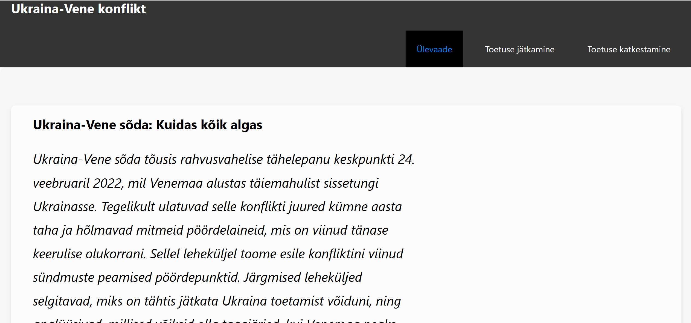
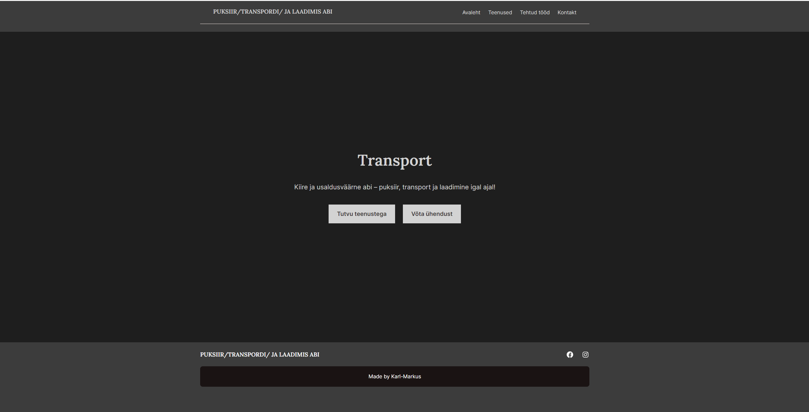
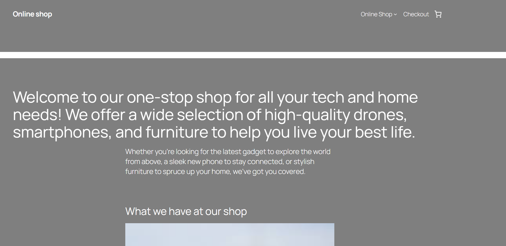
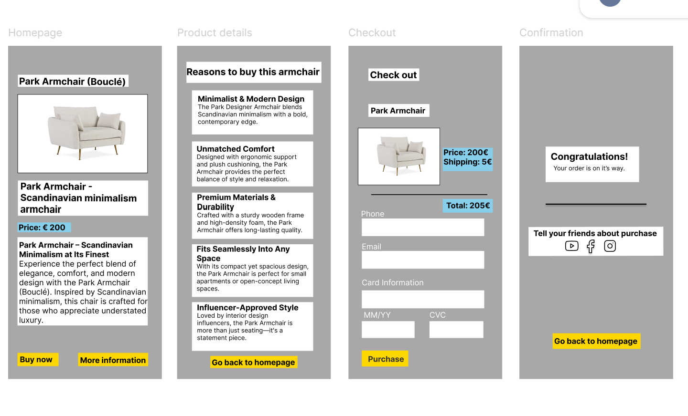
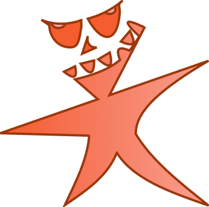

The task was to create a website, either a single-page or multi-page site on a topic of personal interest.
The task was to create an online shop. My first-ever project using JavaScript! As part of the 'Programming' course, I developed an online shop, implementing core JavaScript functionalities to manage products, handle user interactions, and generate dynamic content.
Check out the project on Github Repository

The task was to find a client who needed a website and create it according to their requirements. Our client was a businessman with a transportation company, Transsport.ee, who wanted to update his website. The website was updated using WordPress.

The task was to create an online shop using WordPress. It was my first time working with WordPress, and I used WooCommerce to help me build the online store.

The task was to create a functional prototype for a product.

The goal of this four-member team project was to create an educational mobile application designed to help users expand their Estonian vocabulary. The app works offline, displaying word definitions for users to guess the corresponding word. All statistics and user settings are stored in local storage.
GitHub (Collaborative Repo): github.com/aleksandertap/tagurpidiklassiruum
Project documentation: Documentation